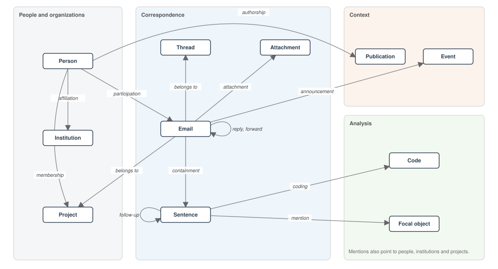

Restructuring the CITF email analysis
1 Summary
The call on 13 November 2026 with David and Ian moved the CITF email work from tagging single emails to studying each project as a sequence of emails across its phases. David asked for questions that tell reviewers why the work matters, Ian asked for a visual check before committing to DocuScope, and both endorsed preparing the corpus before any coding. This document reorganizes the work around that shift, toward the CIHR Project Grant application due March 3, 2027 (Section 2.4).
The work falls into three actions (Section 2). Preparing the corpus builds the study emails, their metadata, authored sentences and de-identified text into one corpus, with a graph of people, projects, focal objects and events around it. Coding rhetoric, functions and actions labels each sentence with three independent kinds of codes, with DocuScope supplying the rhetoric. Relating rhetoric, functions and actions brings the codes together, first with each other and then with role, phase and the course of each project. The grant builds on the earlier applications and on this work, and David and I still have to settle the integration questions raised in the call.
The data take the form of node and edge tables with an activity log (Section 3), and every view comes from them, from a thread view for close reading to comparisons across projects (Section 4). The corpus work leaves the DocuScope assessment for a corpus/ folder in the public citf-emails repository, and the grant work moves into a private repository cloned beside it (Section 5). The order of the work appears in Section 6.
2 Workstreams
The work falls into three actions and the grant. Preparing the corpus produces the emails, zones, sentences, de-identified text, nodes and edges that the other two actions read. Coding rhetoric, functions and actions labels the authored text, and relating rhetoric, functions and actions compares the three kinds of codes by sentence and by project. The CIHR Project Grant, Spring 2027 application draws its questions and methods from all three.
2.1 Preparing the corpus
The corpus is the table of emails, and the zones, links, names and sentences attached to them, that every other action reads. Moving the existing blocks into corpus/ comes before the additions, so that each lands in one place. The first run in the new location has to reproduce email_zones.parquet exactly, checked by hash, before the old blocks leave the assessment notebook.
Objective. Build one corpus that every other action reads, with every study email, its metadata and authored sentences, a de-identified copy for coding, and the graph of people, projects, objects and events around it.
Deliverables.
- Every study email with its dates, recipients, thread and reply and forward links
- Zones and sentences for every study email
- De-identified text with an offset map back to the raw body
- Project information and events
- Node and edge tables for correspondence, people and organizations, and context, with mentions and focal objects
2.1.1 Study emails
The corpus begins with msgs10 and recip4, loaded from the shared email data. Melissa’s blocks drop the duplicates flagged in del_new, join each message to its recipients, remove emails with identical content under different IDs, keep emails with a sender, a recipient and a body, and keep those linked to a valid study ID other than 200-NF. That sequence takes 34,978 messages down to 10,397 study emails.
The corpus comes from one CITF staff member’s mailbox, and other mailboxes will join it. Exchanges that person was not part of are missing, so a gap before a reply may mean the reply never reached the mailbox, and adding the other mailboxes means deduplicating across them.
Two later filters narrow the emails that the DocuScope assessment reads. Block 7 keeps emails of 300 to 2,000 characters and removes those that look like they contain credentials, which leaves a pool of 6,086. Blocks 10 and 12 then leave out automated notifications by sender address, which takes the pool to 6,056. Both filters served the tagging checks and do not belong in the corpus itself. The corpus keeps all 10,397 study emails and marks the ones each filter removes, so that each analysis states which emails it reads.
Content patterns catch automated messages sent from personal addresses, such as out-of-office replies and ticket confirmations, which the current rule misses because it works on sender addresses alone. corpus/tests/filters/ checks each pattern against a sample of the emails it removes, so that a reply that quotes an out-of-office notice stays in.
French emails need a decision, either coding them in the original and reporting them as a gap in the DocuScope analysis, or translating them and accepting that the tagged text differs from what was sent. Measuring their share comes first. A language detector run on the authored zone gives each email a language, and the share by project shows whether leaving French emails out of the DocuScope analysis would drop whole projects from it.
2.1.2 Email metadata
The flattened table keeps 5 of the 32 columns in msgs10, the message ID, study ID, sender, cleaned subject and body. Dates and any reply or identifier fields fall away at that step, and without them nothing can place an email in time or link it to the email it answers. Restoring the dates and the reply and identifier fields is the first task, and that task starts with an inventory of all 32 columns and their missingness.
The inventory looks for four kinds of fields. Dates place each email in time, and the inventory checks their time zone and whether they record sending or receipt. Recipients come from recip4, and if it separates To from Cc, the corpus can show whom an email addressed and whom it only informed. Reply and forward fields, such as message and in-reply-to identifiers, link an email to the one it answers or passes on. Attachment fields, if they exist, give each file’s name and type.
Thread stitching joins the linked emails into threads. A reply joins its parent through the identifiers where they exist, and through the normalized subject line, the quoted text and the timing where they do not. A forward starts a branch, since it passes a message to someone outside the thread, and one email can reply to one message while forwarding another. The links supply the reply and forward edges in the data model (Section 3) and the whole threads that the coding of functions and actions draws on.
corpus/tests/links/ measures the links against threads I stitch by hand on a sample drawn by project and by route, so that each route reports its own precision and recall. Links from identifiers set the standard, and links from subject lines and quoted text enter the analysis only if they come close to it. Timelines of two real projects, drawn without codes, show whether the links and the project information hold together before anything else reads them.
2.1.3 Segmentation
Zoning divides each email into six zones. The authored zone holds the text the sender wrote for this message, greetings and closing lines included. The signature, banner, quoted and other zones hold text the sender did not write, and the markup zone holds what regular expressions match as markup. Keeping the non-authored zones apart shows how many of each category’s tags come from signatures, banners, quoted messages and other text.
Chipmunk (Bevendorff et al. 2020), at commit ecc2c70, gives every line one of its 15 labels, and block 10 maps those labels onto the six zones. I compared Chipmunk with Okapi (Jardim, Rei, and Almeida 2021), which I rebuilt from its paper and trained, and kept Chipmunk, since Okapi labelled whole signature blocks as authored in three of five CITF emails. Five correction rules then fix Chipmunk’s known errors, and regular expressions mark markup, attachment and meeting lines, banners and reply headers, in that order of precedence.
On 40 held-out emails the authored zone reaches 98.7% precision and 97.1% recall. That figure holds only for the 6,056 emails in block 7’s pool, the filter that kept the tagging checks manageable. Zoning all 10,397 study emails brings in short follow-ups and confirmations that the pool excluded, and a two-line reply gives Chipmunk little layout to read. It also brings in the longest emails, which carry the longest quoted chains and the most signatures inside quoted text. A second held-out check draws from emails under 300 characters and over 2,000, by project, and the coder follows the same rules as before. zoning-tests/ holds the comparison of Chipmunk and Okapi, both held-out checks and their scores.
Sentence boundaries then divide the authored zone into the unit that function and action codes label and the unit in which DocuScope records presence. The splitter has to handle text that ends without sentence punctuation, such as lists of variables, bulleted requests and a sign-off name. A hand check on the 30 sample emails, the same emails as the feasibility test, shows where the splitter breaks, and corpus/tests/segmentation/ keeps that check. Each sentence keeps its character offsets into the raw body.
2.1.4 De-identification
Presidio replaces the personal information in the text shown on the coding page. Its recognizers find personal names, email addresses and URLs, the same kinds that the topic modelling preprint (Batist et al. 2026) replaced with placeholders.
Each person needs one pseudonym across the corpus, so that a coder reading a thread can follow who writes to whom, which a placeholder such as <PERSON> hides. A lookup keyed on each person’s email address and on the names the project information lists gives “Dr. Smith”, “Jane” and her address one pseudonym. The pseudonym carries no role, since a label such as the PI of a small study identifies the person. The coding page shows the role in its own column, which gives coders the context Ian asked for.
The offset map links every position in the de-identified text back to the raw body, so that every tag, code and zone points into one canonical text. Because citf-emails is public, no email text enters the repository, de-identified or not, and the spans and the offset map stay in the untracked data/.
A hand check on a sample, kept in corpus/tests/de-identification/, counts the names Presidio misses, since a missed name in a greeting or a signature exposes a person on the coding page. The sample draws extra short emails and French emails, where general recognizers do worst. The de-identification has to meet what REB 26-08-029 promises for the email corpus.
2.1.5 Detecting actors, objects and events
Detection finds what each email involves beyond its sender and recipients. Actors are the people and institutions an email names. Objects are the studies an email names by ID or acronym, the focal objects it mentions, such as the data sharing agreement and core data elements, and the files attached to the email. Events are the mass notifications and webinar invitations sent to many studies at once. Each detected actor, object and event becomes a node, and each mention or attachment becomes an edge from the email (Section 3).
People come from the sender and recipient fields, from names NER finds in the authored zone, and from the crs table, which links 403 investigators and staff to study IDs. A detection counts when a name or address matches one person, and a name that matches no one stays in the table unmatched. The crs table will not cover everyone who wrote, and assigning each person a role in each email is coding work. Institutions come from NER and from email domains, so that mcgill.ca and McGill University become one node.
Studies come from the study IDs and acronyms that the project information lists. Focal objects come from patterns for each, such as “DSA”, “data sharing agreement” and “the agreement” for the data sharing agreement. Short forms need context, since “the agreement” can name other agreements, and mentions also take the form of pronouns, misspellings and French, so detection will miss some and flag some wrongly. Attachments come from the attachment fields, or from the attachment lines in the other zone if msgs10 has no such fields, and each attachment’s type gives its shape in the timeline (Section 4.1.2). The files themselves may not survive in the archive, and without them no content hash can show that a file recurs.
Mass notifications show up as one message sent by the same sender to many studies within minutes, with the same body. Webinar invitations show up in their subject lines and dial-in lines. Each event found this way takes its date from the email, and events from outside records join those events in the project information.
NER finds the names. spaCy’s general English models label people, organizations, places and dates, so they find “McGill University” and return “COVID-19 Immunity Task Force” as one organization, but they miss the data sharing agreement, core data elements and study acronyms. spaCy’s EntityRuler adds patterns that run beside the trained model, and the project information supplies them as study IDs, acronyms, PI names, institutions and focal objects. The same spans let block 12’s name rule flag DocuScope tags inside names without a hand-written list, replacing the seven names it covers now. corpus/tests/detection/ checks each kind of actor and object on a hand-labelled sample, with precision and recall for each. The output is a table of spans giving the email, the offsets, the text, the kind and the node it matches.
2.1.6 Project information
Project information gives each project the context that its emails lack, and the events give all projects a shared calendar. Together they let the analysis compare projects by field, institution, contracts officer, prior experience and later practice, which most of the integration questions need.
A project’s information includes its study IDs and acronyms, the names and email addresses of its principal investigators and key personnel, its institutional hosts and affiliations, the publications and datasets from its CITF participation, and the profiles and ORCID iDs of its members. The crs table links 403 investigators and staff to study IDs and supplies the starting list. ORCID supplies profiles and works where people have them, OpenAlex supplies works, co-authors, affiliations and dates, and DataCite indexes dataset DOIs. Publications and datasets dated before a project’s CITF participation indicate its members’ prior experience with data sharing and their fields, and co-authorship with the CITF core team or other data contributors indicates prior ties. The same measures after participation show whether CITF work changed their data sharing and their collaborative networks.
Each of these steps carries a judgement, and the project information records each one. Matching a name to an ORCID iD or an OpenAlex author fails on common names and on people who changed institutions. Deciding that a paper comes from a project’s CITF participation means reading the paper. Many datasets have no DOI, and contracts officers and study coordinators rarely appear in bibliographic sources at all. Coverage will therefore differ by role and by field, and the records have to state which sources cover which projects. Linking people in the corpus to public records also needs checking against REB 26-08-029, which covers the email corpus and the questionnaire.
The milestone dates come from records. The topic modelling preprint excluded seven studies whose milestones were out of order, and a recorded date may lag the work it marks, as when data arrive in several uploads.
The events need dates and, where possible, reach. Webinar dates and the CITF conference come from CITF records. Mass notifications come from detection in the corpus itself. Major reports and publications come from the CITF’s own outputs and from the wider literature on data sharing and on data sharing during COVID-19. The corpus does not show who attended a webinar, so any comparison around one rests on timing alone.
None of the work on project information needs email text, so that work can proceed alongside the rest of the corpus.
2.2 Coding rhetoric, functions and actions
Three kinds of codes label the authored text of each email. Rhetoric comes from DocuScope, and functions and actions come from human coding that a classifier extends to the rest of the corpus. The rhetoric codes and the function and action codes stay independent until the relating begins, so that any link between them reflects the emails themselves.
Objective. Label the authored text of each email with rhetoric, functions and actions, each validated before it enters the analysis.
Deliverables.
- Rhetoric codes from DocuScope, with error rules and a validation of each category
- Codebooks for functions and actions
- Function and action codes on every sentence, from coders and classifiers
- Follow-up links
2.2.1 Rhetoric
Rhetoric comes from DocuScope, and the DocuScope assessment decides whether its tags are accurate enough to use in these emails. The tagger is en_docusco_spacy, a trained spaCy pipeline that reproduces DocuScope categories as entity labels, with an F-score of 0.81 reported on its model page. I described DocuScope in the call as dictionary lookup, but the tagger labels spans the way NER does, so David’s question about multi-token concepts has a direct test. Marking known names before the tagger runs shows whether the tagger respects them.
Block 8 counted 374,940 tags across the pool, 176,836 of them in the categories that bear on rhetoric, and showed that the raw counts mix the senders’ rhetoric with text no sender wrote and with words read in the wrong sense.
The assessment answers that in three steps. Zoning removes text the sender did not write. Error rules flag recurring misreadings in the authored text. Block 12 defines 13 of them, 5 applied without coding and 8 that a human sample tests first, and it draws 774 tags for coding, stratified so that each rule, each domain noun and each category has enough tags to judge on its own. Block 13 then compares four versions of the tags, raw, authored, cleaned and an upper bound with every rule match removed. Its findings show that misreadings survive cleaning, with “agreement” still tagged Positive 959 times, and that a few formulas carry whole categories, as “hesitate to” carries about half of Uncertainty.
The commit “Save HOW tags in block 12 and add block 13 to the DocuScope Assessment notebook” changed only block 12. Block 13’s findings sit in 06_block-13.qmd, but its code is not in the committed notebook, and I restore it before anything else changes. Coding the sample comes next. I set the thresholds for applying a rule, rating a category and deciding whether a supervised model is worth building before coding any tag, so that results cannot move them. Two coders then judge each tag as correct, incorrect or unsure, and the validation block measures their agreement, each rule’s hit rate and each category’s remaining error, and relabels the tags that the confirmed rules catch.
Grouping the categories into rhetorical styles is the question David and Ian pressed when they asked how tags become interpretable. how-what-strategy.qmd answers part of that question. The strategy document records whether each category appears in each sentence and pools those answers within function categories, which works for sentences of any length, and it sets aside discriminant analysis because that method builds rhetoric out of the groups it separates. Brown and Laudenbach’s four styles (Brown and Laudenbach 2022) could serve as a starting codebook, as Ian suggested, though the corpus may show more or fewer styles. A re-read of their article should establish how they named their styles, which tags they discarded and how they classified single emails. Section 8 of the assessment, the planned sender-level factor analysis, leaves the assessment, as how-what-strategy.qmd directs.
2.2.2 Functions
Function codes label each sentence in the authored zone with the work it serves. Functions have their own sample, coding page, codebook, agreement figures and classifier, in coding/functions/.
The pipeline in how-what-strategy.qmd keeps labelling predictable and auditable. Discovery coding comes first, on a calibration set of whole threads with no codebook, so that the categories come from the emails. The coders group their codes into function categories and write a codebook with definitions, inclusion and exclusion criteria and anchor examples. Coders then label a training set against the frozen codebook, with small-text choosing the sentences the model is least certain about, and each change to the training set produces a new version and a retrained model. A test set of about 200 sentences, double-coded and stratified by project and milestone, never enters training and gives both human agreement and model accuracy for each category. I compare SetFit (Tunstall et al. 2022) with logistic regression on frozen sentence embeddings and with a fine-tuned small encoder, and the simplest model that reaches the floor wins. A category enters the analysis only if the model’s F1 on the test set reaches the agreement the coders achieved on it. No DocuScope feature ever enters the classifiers.
Coding whole threads answers Ian’s point that coding sometimes needs the sender’s role and the email’s context, since a short reply makes sense only beside the message it answers. Drawing threads by project and milestone ties the coding to the timeline. The coding page exports labels by sentence identifier with character offsets on the raw body, so that codes, tags and zones line up.
Two decisions remain open, who codes the calibration, training and test sets, and how French emails enter the coding. The feasibility test on the 30 sample emails comes first. It splits their authored zones into sentences, codes the sentences by hand, and reads which DocuScope categories appear in the sentences of each code, which shows whether the sentence works as a unit before the larger coding begins.
2.2.3 Actions
Action codes label each sentence in the authored zone with what the sentence does. The actions come from discovery coding, as the functions do, and requesting, providing, chasing and confirming are examples from the call, not a fixed list. Actions have their own sample, coding page, codebook, agreement figures and classifier, in coding/actions/, and the action codebook has its own definitions, criteria and anchor examples.
Coders also mark follow-ups, sentences that repeat an earlier request, and link each one to the request it repeats. The coding page shows the earlier emails of the thread, so coders can find the request. Each link joins two sentence identifiers, which lets the project level count how often each request came back and how long each repetition took.
MAILEX, a public dataset of email threads annotated with a taxonomy of email acts (Srivastava et al. 2023), could add training data for actions. Once the discovery codes exist, I map MAILEX’s acts onto the action codebook and record where the two match. A model trained on the matching MAILEX acts then runs on the action test set, and if it reaches the coders’ agreement on that set, the action classifier trains on MAILEX with a smaller CITF set for adaptation.
2.3 Relating rhetoric, functions and actions
Relating rhetoric, functions and actions brings the three kinds of codes together, first with each other and then with who wrote them, when, and where the project stood. The three come from separate procedures and stay independent until this point, so that any link between them reflects the emails themselves. The comparisons are descriptive, and they inherit every choice made in building the corpus, including deduplication and the restriction to emails linked to a study ID.
Objective. Relate the three kinds of codes to each other and to who wrote them, when, and where the project stood.
Deliverables.
- DocuScope categories mapped onto sentences
- Comparisons of rhetoric by function and action
- The activity log
- Counts per project, phase and role
- Thread views and timelines of two real projects
2.3.1 Relating codes to each other
The codes do not share a unit. DocuScope tags spans of any length, while function and action codes label whole sentences, and a tag that crosses a sentence boundary goes to one sentence or to both, by a rule fixed in advance. how-what-strategy.qmd records whether each DocuScope category appears in each sentence, which works for sentences of any length and gives every code the sentence ID to join on.
With the codes on one unit, how-what-strategy.qmd compares the rhetoric of each function category with the corpus as a whole. It separates the rhetoric that every sentence of a category shares, which belongs to the function itself, from the rhetoric that varies, which is what context can explain. Actions enter the same comparison, so that a request and a confirmation serving the same function can show different rhetoric.
2.3.2 Relating codes to context
The varying part of the rhetoric is then related to role, phase, the pair’s contact history and earlier follow-ups. The difficulty lies in keeping the person apart from the work. Each sender writes in a style of their own across every function, and some senders write far more than others, so mixed models with sender and study as random effects separate personal style from what the sentence does. Close reading checks each pattern against the emails behind it and reads each sentence beside the message it answers, since a short reply makes sense only in that context.
At the project, the data model (Section 3) places each email in a sequence of senders, milestones, focal objects and attachments. The two example projects show that a phase’s duration hides why it took as long as it did, and that the order of senders shows it (Section 4). The project level turns those sequences into counts across all projects, such as rounds with a contracts officer before signing, time from an escalation to the next milestone, time to reply by role and spreadsheets sent again after the first data request. Moving from sentences to projects needs care, since one long email can outweigh many short ones, so the project level reports codes per email and per phase. It also tells the sentence level where to look, at the emails just before and after an escalation or across successive replies from one contracts officer. Section 3.3 of how-what-strategy.qmd already joins the two levels through its analyses of text structure, outcomes and replies.
The project level depends on the links and the project information, which the timelines of two real projects test during the corpus work (Section 2.1), and on the activity log, which relating/context.ipynb builds once the action codes exist (Section 3.4). The full thread views and timelines of those two projects come before any counts run across the corpus (Section 4.1.1, Section 4.1.2).
2.4 CIHR Project Grant, Spring 2027
The grant is a CIHR Project Grant application to the Spring 2027 competition, with David as nominated principal applicant. CIHR lists the competition on ResearchNet as 202703PJT, with registration closing February 3, 2027 and applications closing March 3, 2027. McGill’s internal deadlines fall earlier than CIHR’s. Ian reviews the draft before submission. The grant files move out of CITF-Postdoc into grant-writing/ before drafting begins (Appendix A).
Objective. Submit a CIHR Project Grant application to the Spring 2027 competition that builds on the earlier applications and the work so far.
Deliverables.
- Settled integration questions
- The application, due March 3, 2027
2.4.1 Grounding the proposal
The application builds on two earlier attempts. An earlier Project Grant application went to the Knowledge Translation Research committee, which did not fund it, with reviewers questioning its fit to that committee, its methodological detail, its budget justification and its treatment of sex and gender. CIHR did not fund the March 2026 resubmission to competition 202603PJT either, and a related Priority Announcement grant in Pandemic Preparedness and Health Emergencies Research, competition 202603PPE, now funds the study for $100,000. All reviewers of the March 2026 application raised consent for third parties in the email corpus, the senders and recipients other than the mailbox holder, and reviewers again found that sex and gender sat in their own section and did not shape the methods. The data model gives sex and gender a place in the methods (Section 3), since gender is an attribute of each person that the counts can carry. REB protocol 26-08-029 already justifies a waiver of consent under TCPS2 Article 5.5A, and the application can answer the consent critique from that justification.
The application also builds on the work around the corpus. The topic modelling preprint supplies the phases, the milestones and the 395-day median from the first data request to the DSA signing. The interviews in CITF-Postdoc give the accounts of the people who did the work. The DocuScope assessment shows what rhetorical tagging can and cannot support in these emails. RDS-Review, the scoping review that updates Chawinga and Zinn (2019), with its protocol going to JMIR Research Protocols, places the study in the literature on research data sharing. By March 2027, the prepared corpus, the timelines of two real projects and the feasibility test show that the methods work on these emails.
The argument that data sharing mandates ignore administrative overhead ties the application together. The preprint and the interviews describe the overhead, the email analysis measures where and how the overhead fell and how people wrote about it, and the scoping review places it in the literature on research data sharing. The methods draw on relating rhetoric, functions and actions and on the project information, with the activity log as the structure that ties emails to projects, milestones and events.
2.4.2 Possible lines of inquiry
The call supplied a so what in the framing of social and informational pain points in data sharing, and it raised integration questions the analysis could pursue. Each asks how something about a project, its people or its moment shaped what its emails did and how they were written, so each needs data beyond the email text. They remain brainstormed, and the approach under each is a first thought on how the related codes could answer it. Settling the ones the application takes up with David, dated and kept in notes/, before any results arrive fixes the comparisons and limits the number of pairings that could turn up by chance.
Did projects in different fields respond differently to the data sharing mandate? Group projects by field and compare how long each phase took, with survival analysis on the time to each milestone, along with the rounds and follow-ups in each phase. At the sentence level, mixed models with study as a random effect compare the actions and rhetoric of each field. Field comes from the project information.
Did the webinars change how teams wrote, given that projects were at different phases? Align each project’s emails on each webinar date and compare a window before with a window after, separately for projects in each phase at the time. The comparison covers the actions and rhetoric of those emails and whether projects moved to the next phase sooner after a webinar. Since attendance is unknown, any difference rests on timing alone. The webinar dates come from CITF records and the phases from each project’s milestones.
Did contracts offices and officers shape how the agreement phase went? Group projects by institution and by contracts officer and compare the time from the first data request to the DSA signing, the rounds with the contracts officer before signing and the share of the phase spent waiting on the institution. A contracts officer who handled several projects allows a comparison within one person, and close reading of those exchanges shows whether the same objections recur. Institutions and contracts officers come from detection and the project information, and roles from participation.
Did escalation by the task force director change what followed? Find the emails the task force director wrote or was copied on, and compare the time to the next milestone with projects at the same phase that had no escalation. At the sentence level, compare the actions and rhetoric of the emails just before and just after, from both the study side and the CITF side. Escalation follows trouble, so close reading checks each case for what prompted it. This uses participation by role and the reply and forward links.
Where did projects stall, and what did stalling look like in writing? Define a stall as a gap within a phase longer than that phase usually allows, or a run of follow-ups on one request, and mark each stall on the project’s timeline. Sequence analysis of the activity log then shows which paths through the phases include stalls. At the sentence level, compare the follow-ups with the requests they repeat, and the emails inside a stall with those around it. This uses the milestones, the reply and forward links and the follow-up links.
Did prior data sharing experience or prior ties to the core team ease the process? Measure each team’s data shared and its co-authorship with the CITF core team and other data contributors before CITF participation, then compare phase durations and follow-up counts across those measures. Close reading of projects at both ends shows whether experience appears in the writing, for example in fewer clarifying questions about the agreement. This uses the publications, datasets and co-authors from before CITF participation.
Did CITF participation change teams’ later data sharing and collaboration? Compare each team’s datasets and co-authorship after CITF participation with the same measures before it, and relate the change to how its CITF process went, by phase durations, stalls and escalation. The comparison is descriptive, since teams’ later practice also follows trends in their fields. This uses the publications, datasets and co-authors from after CITF participation.
The draft currently leans toward questions 1 and 5. The first comes from David’s account of the mandate and compares projects. The fifth turns the argument about administrative overhead into something the emails measure. Restricting the rhetoric to the sentences the chosen questions need answers David’s concern about scope.
3 Data model
The data form a graph of nodes and edges in four groups. Correspondence holds the emails and their parts, people and organizations hold who wrote and on whose behalf, analysis holds what coding and detection add, and context holds what comes from outside the emails. Each part of the work writes the tables it produces, keyed by identifiers that every notebook shares. corpus/ writes the correspondence, people and organizations, and context tables, with mentions and focal objects, each coding folder writes its Code nodes and Coding edges, coding/actions/ writes the follow-ups, and relating/ builds the activity log. People nodes carry names, email addresses and gender, so all of these tables stay in untracked data/ folders, as the email text does. Figure 1 shows the node and edge types, and Table 1 and Table 2 list them.

3.1 Nodes
| Node | Identifier | Comes from | Main properties |
|---|---|---|---|
| Correspondence | |||
| Thread | Thread ID | Email metadata | Project, date range, email count |
| Email ID | Study emails | Timestamp, project, thread, authored zone, source IDs | |
| Sentence | Sentence ID | Segmentation | Email, character offsets |
| Attachment | Content hash, or name and size | Email metadata; detection | Type, file name, size, pages; sheets, rows and columns |
| People and organizations | |||
| Person | Person ID | Metadata; detection; crs table |
Names, email addresses, affiliation, ORCID iD, gender with its source |
| Institution | Institution ID | Detection; project information | Name, email domains |
| Project | Study ID | Emails; project information | Study IDs, acronyms, milestone dates, field, hosts |
| Analysis | |||
| Code | Code ID | Codebooks; DocuScope | Kind of code, name, codebook version |
| Focal object | Object ID | Detection | Name, and the forms that name it |
| Context | |||
| Publication | DOI or OpenAlex ID | Project information | Type, date, authors |
| Event | Event ID | Detection; project information | Start and end dates, kind, source |
A thread groups the emails that reply and forward links join, so that coding can draw whole threads and the views can count rounds within one.
Each email gets an email ID of our own, which the corpus assigns once and never reuses. The message IDs in the source data, msgid2 among them, have a complicated history, so they stay as properties for tracing an email back to its source and identify nothing in the model. Every email belongs to one project.
Sentences come from the authored zone and keep their offsets into the raw body. Codes and mentions attach to sentences.
Attachments take a content hash as their identifier, so a file sent again, or under another name, stays one node. Where the file did not survive, the file name and size stand in, and recurrence rests on those alone.
Gender enters the methods as a property of each person. A person’s own stated pronouns or profile give that person’s gender where they exist, and gender_guesser gives a probabilistic estimate otherwise, with its probability kept. The source stays beside the value, so that the counts can carry gender and report how much of it rests on estimates.
A project is a CITF study, identified by the study ID that msg_citfid takes from subject lines. Its milestone dates are properties of the project. The topic modelling preprint defines six milestones that bound five phases, and this document calls them funding start, first data request, DSA signed, data upload, data cataloguing and data publication. The preprint names the second and third data introduction and DSA execution. Each project reaches the milestones on its own dates, and a thread can cross one. A project’s field comes from its publications and its hosts’ departments, which I code once for each project.
Codes are nodes so that each code applied to a sentence can carry its own record of where it came from.
Focal objects are what a project’s emails keep returning to, such as the data sharing agreement, consent elements and core data elements, matched across threads and across projects. They have no date of their own and enter the timeline only through the sentences that mention them.
Events affect all projects. They include webinars, mass notifications, the CITF conference, email outages, and major reports and publications, by the CITF and from outside it, on data sharing generally and during COVID-19. Most last a day, and the conference and outages take start and end dates.
3.2 Edges
| Edge | From | To | Main properties |
|---|---|---|---|
| Correspondence | |||
| Reply | None | ||
| Forward | None | ||
| Containment | Sentence | Position in the email | |
| Attachment | Attachment | File name as sent | |
| People and organizations | |||
| Participation | Person | Sender, To or Cc; role in that email | |
| Membership | Person | Project | Start and end dates |
| Affiliation | Person | Institution | Start and end dates |
| Analysis | |||
| Coding | Sentence | Code | Character offsets for DocuScope tags |
| Mention | Sentence | Person, institution, project or focal object | Character offsets |
| Follow-up | Sentence | Sentence | None |
| Context | |||
| Authorship | Person | Publication | Author position |
| Announcement | Event | None | |
Reply and forward are the only links between emails, and emails without one stand on their own in time.
Role sits on participation, not on the person. People change roles over the course of a project, a principal investigator in a small study may also act as coordinator, and a contracts officer may handle several studies at once. Participation can also carry an effect beyond the email it belongs to. When the task force director wrote to a project or was copied on its emails, the question is whether the project’s later emails changed. The same question applies to any person whose presence may matter.
Mentions attach to sentences, so that the rhetoric, functions and actions of a sentence that mentions the data sharing agreement sit beside the mention. Mentions of other projects stay mentions, since each email belongs to one project.
A follow-up links a sentence to the earlier request it repeats, which may sit in another email.
3.3 Provenance
Every edge that comes from matching, detection or coding records how it came about. Reply, forward, participation and mention edges record their method and a confidence. The method names what made the link, such as a message identifier, a subject line, quoted text, a pattern, the NER model or a person. Coding edges record their source (a coder, a classifier or the DocuScope tagger), the codebook or model version, a confidence and the date, and follow-up edges record their coder. Analyses can then keep only the links above a threshold and report how many fell below it. One sentence can carry codes from two coders and from a classifier, and agreement and model accuracy come from comparing them.
3.4 Activity log
The activity log derives from the node and edge tables. relating/context.ipynb builds the log once the action codes exist and rebuilds the log whenever the tables change. The log has one row for each action coded in an email, giving the email, its project, thread and date, its sender, the sender’s role in that email, the action and the phase. An email with no coded action gets one row with no action. Process mining and sequence analysis expect one activity per row, and the log meets that while keeping every action an email carries, since one email can request and confirm at once. The log leaves the rhetoric at the sentence level, since counts per email mix emails of different lengths.
The phase follows from the email’s date and its project’s milestones (Section 2.1.6). Where a milestone is missing or out of order, the emails it bounds get no phase, and the project carries a flag. Analyses by phase leave those emails out and report how many, as the topic modelling preprint did with the seven studies whose milestones were out of order.
4 Views of the graph
Every view draws on the node and edge tables and the activity log. Views within a project serve close reading, and views across projects serve comparison and relating codes to context (Section 2.3). Timelines of two real projects come first, drawn without codes during the corpus work to test the links and the project information. Once codes exist, relating/views.ipynb draws the full thread views and timelines of those projects, on emails that a reader can follow in full.
4.1 Within a project
4.1.1 Thread view

The thread view (Figure 2) shows one thread’s emails in order, each under its sender’s role and date, with every sentence of the authored zone beside its function, its action and the DocuScope categories present in it. A dashed arrow links a follow-up to the request it repeats. This is the view for close reading. The thread view shows whether a pattern in the counts holds up in the emails behind it, and it gives the visual check of DocuScope that Ian asked for, since each category sits beside the sentence that carries it. The text in the view is de-identified, and the view stays in the untracked data, as the email text does.
4.1.2 Project timeline

In the project timeline (Figure 3), the horizontal axis gives absolute dates. Vertical space states who and what. Each project lane gives one row to each person in a role. The CITF side has the task force director, Scientific Director, Operations Manager and data manager, and the study side has the principal investigator, study coordinator and contracts officer. Each email sits in its sender’s row, so a thread reads as an exchange between people, with chasing as repeated returns to one row and a stalled exchange as a long gap before the reply. The rows run from the CITF side to the study side without a divider, since affiliation is an attribute of each person for the analysis to compare. Other roles may join these rows once the coding settles those roles.
Labels in the left margin group the rows into people, focal objects, attachments and publications. Each focal object takes a row, and a tick marks each email that mentions it. Attachments take one row per type, with a mark at each email that carries one. Squares mark spreadsheets, triangles mark PDFs and hexagons mark text documents. Which file is which, and whether a file recurs, sits in the linked properties table. Publications from the project’s CITF participation take one row per type, for preprints, papers and datasets, since datasets show data sharing directly.
Copied recipients stay in the participation edges, and the timeline can mark them when a question needs them. Once coding exists, each email’s mark can also take the colour of its actions.
Two invented projects show what the timeline makes visible. Each follows an arc chosen for that purpose.
Project A signs quickly after escalation and then reworks its data. Funding starts in mid-2020, and the Operations Manager writes once before the Databank’s first data request near the end of that year. The negotiation runs between the Operations Manager and the principal investigator, with the data sharing agreement mentioned in most exchanges. In spring 2021 the Operations Manager forwards the thread to the contracts officer, who replies that summer, and the Operations Manager answers with a PDF attached, likely a draft agreement. In late 2021 the task force director writes to the project, and the project signs the DSA within weeks. The principal investigator replies just after the signing, so the thread crosses the milestone. The data work runs between the study coordinator and the data manager through 2022, with core data elements as the focal object. The coordinator sends a text document, and the data manager sends a spreadsheet, then sends a spreadsheet again early in 2023, just after data upload. The Scientific Director writes once at the end of that exchange, and cataloguing follows in spring 2023. The project posts a preprint during the data work, a paper in 2023 and a dataset in 2024.
Project B negotiates for nearly two years through the contracts office without escalation. Funding and the first data request come close together in late 2020. The Operations Manager writes to the principal investigator and then to the study coordinator, who sends a text document. From early 2022 the exchange moves to the contracts officer, who replies twice, with the Operations Manager sending a PDF in between. The task force director never writes. The project signs the DSA in summer 2022, and the Scientific Director writes shortly after. The data work is short. The study coordinator and the data manager exchange spreadsheets over about six months, the data manager forwards one message within the team, and upload and cataloguing follow in late 2023. The project publishes a paper and a dataset in 2024, with no preprint.
Both projects took more than a year to sign, for different reasons. Project A signed weeks after the task force director wrote. Project B took nearly two years, went through two rounds with the contracts officer, and nobody escalated. The topic modelling preprint reports a median of 395 days from the first data request to the DSA signing across studies, and a median cannot tell these two cases apart. The order of senders can.
Webinars fell during both negotiations. The events carry dates common to all projects, so a comparison can set each project’s emails before a webinar against those after it, whatever phase the project was in at the time.
4.2 Across projects

4.2.1 Projects aligned on a milestone
Each project’s emails sit on a common axis of time before and after its own DSA signing (Figure 4, panel A), or any other milestone, so projects at different calendar dates line up. The view shows how activity, follow-ups and escalation gather around a milestone, and whether they gather differently by field or by contracts officer. It draws on the emails, the milestone dates and participation.
4.2.2 Phases over time
The number of projects in each phase, year by year (Figure 4, panel B), shows where projects accumulated and when they moved on. The same calendar axis can carry the events, though any coincidence with movement rests on timing alone. The view draws on the milestone dates and the phases in the activity log.
4.2.3 Roles against phases
A matrix of sender roles against phases (Figure 4, panel C) gives the share of each role’s sentences that carry an action, a function or a DocuScope category, one code at a time. The matrix is the comparison view for relating codes to context, since it shows whether the codes follow the role, the phase or both. The matrix draws on the coding edges, participation with its roles and the phases.
4.2.4 Process map
Process mining on the activity log (Figure 4, panel D) draws the paths from one action to the next within each project, with the line width showing how often each transition occurs. Sequence analysis compares the paths across projects, and the time to each milestone supports survival analysis by field, institution or contracts officer.
4.2.5 Network
Without time, people, projects, institutions and focal objects form one network (Figure 4, panel E). The network shows who links projects, which focal objects recur across them, which institutions share contracts officers, and which people carry ties from before the CITF. It draws on participation, membership, affiliation, mention and authorship edges.
4.3 Practical considerations
A real project can hold hundreds of emails, with many people copied and several threads open at once, and a single timeline of it will be hard to read. Every view therefore filters, to one thread, one phase, one person or one focal object, and collapses people into their roles when individuals do not matter. The timeline leads into the thread view (Section 4.1.1), so that a pattern seen across a project can be read in the emails that make it.
Links and values carry their method and confidence from the data model (Section 3), and the views show the uncertain ones differently. Links below the threshold appear faint, and every view marks estimated gender as an estimate. The gaps in the data behind every view appear in the subsections of Preparing the corpus that prepare each kind of data (Section 2.1), and the limits on what comparisons show appear in Relating rhetoric, functions and actions (Section 2.3).
5 Repository
citf-emails/
├── corpus/
│ ├── index.qmd, sections/
│ ├── corpus.ipynb # zones, sentences, de-identification, detection
│ ├── links.ipynb # threads, reply and forward links
│ ├── project-information.ipynb # projects, people, publications, events
│ ├── tests/
│ │ ├── filters/
│ │ ├── zoning/
│ │ ├── segmentation/
│ │ ├── de-identification/
│ │ ├── detection/
│ │ └── links/
│ └── data/ # untracked
├── coding/
│ ├── rhetoric/ # the DocuScope assessment
│ │ ├── index.qmd, sections/
│ │ ├── docuscope_assessment.ipynb
│ │ ├── tests/
│ │ └── data/ # untracked
│ ├── functions/
│ │ ├── index.qmd, sections/
│ │ ├── functions.ipynb
│ │ ├── tests/
│ │ └── data/ # untracked
│ └── actions/
│ ├── index.qmd, sections/
│ ├── actions.ipynb
│ ├── tests/
│ └── data/ # untracked
├── relating/
│ ├── index.qmd, sections/
│ ├── codes.ipynb # codes with each other
│ ├── context.ipynb # context, activity log, counts
│ ├── views.ipynb # thread view, timelines, comparisons
│ └── data/ # untracked
├── notes/
│ ├── index.qmd # listing of the notes
│ ├── how-what-strategy.qmd
│ └── restructuring/ # this document, with its own .gitignore
├── grant-writing/ # private repository, untracked
└── private/ # untrackedThe folders follow the actions. corpus/ builds the corpus that every action reads, since project information, threads, attachments and links to focal objects are data that several analyses read directly. corpus.ipynb loads, flattens and links emails to studies, then adds zones, sentences, de-identification and detection. links.ipynb stitches threads and records reply and forward links, and project-information.ipynb compiles projects, people, institutions, publications and events. Block 7’s length filter stays in the DocuScope assessment, where it keeps the tagging checks manageable, and stops defining the corpus. Zoning extends to all 10,397 study emails.
coding/ holds one folder for each kind of code. coding/rhetoric/ takes the DocuScope assessment, which moves there from docuscope-assessment/, and coding/functions/ and coding/actions/ each hold their own notebook, coding page, codebook and classifier. relating/ holds one notebook for relating codes to each other, one for relating codes to context, which also builds the activity log, and one for the views. Moving the DocuScope assessment changes its address on the site, so the move waits until the assessment is finished.
Each notebook numbers its blocks from 1, and Table 3 shows where each current block moves. Block numbers appear in notebook headings, in the About text of docuscope_coding_tool.html, in the assessment’s sections and in how-what-strategy.qmd (“block 13 part 2b”), and all of them change in one pass.
| Current block | Moves to |
|---|---|
| 1 Load email data | corpus.ipynb block 1 |
| 2 Flatten emails | corpus.ipynb block 2, keeping dates and any reply and identifier fields |
| 3 Restrict to study emails | corpus.ipynb block 3 |
| 9 Label lines with Chipmunk | corpus.ipynb block 4, over all study emails |
| 10 Refine zones | corpus.ipynb block 5 |
| 11 Zone check sample | corpus/tests/zoning/ |
| new | corpus.ipynb blocks 6 to 8: sentences, de-identification, detection |
| 4 Install DocuScope | coding/rhetoric/docuscope_assessment.ipynb block 1 |
| 5 Tag email bodies | block 2 |
| 6 View tags in an email | block 3 |
| 7 Export 30 tagged emails | block 4 |
| 8 Distribution of tags | block 5 |
| 12 Detect likely tagging errors | block 6, reading zones from corpus/ |
| 13 Comparison across tag versions | block 7, once restored |
| 14 Validation (planned) | block 8 |
The coding sample keeps its seed, so block 6 regenerates the same 774 tags with new block numbers in the coding tool.
Each folder keeps its checks in a tests/ folder of its own, with one subfolder per check and the write-up in that folder’s sections/. corpus/tests/ holds the checks on the automated-message patterns, the zones, the sentences, the de-identification, the detection and the links. The zoning checks cover the Chipmunk and Okapi tests on Gmane and Enron, the five CITF emails, the zone check of 80 emails and the held-out checks, and the link checks include the timelines of two real projects drawn without codes. coding/rhetoric/tests/ holds the tag coding sample and the planned validation, and the tests/ folders of coding/functions/ and coding/actions/ hold each test set and the comparison of SetFit with its baselines, with the MAILEX test under actions. The test subfolder names are proposed labels.
notes/ holds working notes, following notes/ in CITF-Postdoc, with notes/index.qmd as the page that lists them. how-what-strategy.qmd moves there, along with the notes not yet seen here. This document is the first note in notes/, at notes/restructuring/index.qmd. The summary of the call and the transcript sit beside it as _call-summary.qmd and _transcript.qmd, which the site skips because of the leading underscore. A .gitignore of the folder’s own lists both files, so the protection moves with the folder, and the root .gitignore stays as it is. The published page leaves out the summary of the call and the transcript, since both are personal records of the call, and a local render with -M call-appendices:true includes them.
grant-writing/ is its own private repository on git.mchi.mcgill.ca, cloned into citf-emails/grant-writing/ and listed in .gitignore. citf-emails is public on GitHub, so GitHub publishes every tracked file and every past version of it, and grant drafts, budgets and reviews cannot sit there. Listed in .gitignore, the grant repository leaves no trace in citf-emails, and I work in it as an ordinary repository. Appendix A gives the steps to carry the grant work and its history over from CITF-Postdoc.
6 Next steps
The next steps continue work that began in December 2024 with the CITF-Postdoc site and its research, case selection, interview and ethics protocols. The REB approved the interview study’s revised informed consent in March 2025, and from April 2025 to February 2026 I interviewed people involved in the CITF Databank and coded each interview, with an ethics amendment approved in June 2025 and the qc tools for reviewing the codes built in spring 2026. A CIHR Project Grant application drafted with David from July 2025 went in that September, alongside a fellowship application, and the Knowledge Translation Research committee did not fund it. I submitted an abstract to the CRDCN conference in February 2026. In March 2026 CIHR declined the resubmission to competition 202603PJT and funded a related Priority Announcement application to competition 202603PPE for $100,000, which now funds the study. I started the CITF-Postdoc manuscript on the interviews in June 2026.
The email analysis began in summer 2025 with the cleaning of the email data, done outside Jupyter, which produced msgs10 and recip4. This account of the cleaning is provisional, and a fuller history of it is still to come. I set up the citf-emails site in April 2026 and wrote the topic modelling manuscript there, with its NMF topics and LLM-assisted labels, its sender categories and its six milestones, and brought in Melissa’s revisions in May 2026, when the research protocol for the email study was also overhauled. In August 2026 I redrafted that protocol around the revised work plan and submitted REB application 26-08-029-01 for the email corpus and the questionnaire, revising it after the pre-review comments in September. RDS-Review, the scoping review that updates Chawinga and Zinn (2019), began during a weekly call in early October 2026. Melissa’s notebook, blocks 1 to 7, filtered msgs10 and recip4 to the 10,397 study emails, tagged them with DocuScope and exported the 30-email sample from which the DocuScope memo grew. By 12 November 2026 blocks 8 to 12 had counted the tags, zoned the emails with Chipmunk after a comparison with a rebuilt Okapi, checked the zones on 40 held-out emails, defined 13 error rules and drawn the 774-tag coding sample, and the DocuScope Assessment went onto the site that day. Block 13’s findings followed on 13 November, the day of the call with David and Ian.
- Inventory
msgs10. List its 32 columns with missingness, check for dates, identifiers and reply fields, and check whether attachment files survive in the mailbox archives. - Restore block 13. Find its code on the server, commit it to
docuscope_assessment.ipynb, and confirm whetherstartandendinhow_tags.parquetare character or token offsets. - Move the grant work into
grant-writing/(Appendix A). - Create
notes/with this document innotes/restructuring/, and movehow-what-strategy.qmdinto it. - Create
corpus/. Move blocks 1 to 3 and 9 to 11 with the restored fields, reproduceemail_zones.parquetby hash, renumber both notebooks and regenerate the coding tool. - Extend zoning to all study emails and run the second held-out check.
- Split sentences and de-identify the authored text, checked in
corpus/tests/segmentation/andcorpus/tests/de-identification/. - Compile project information and events in
project-information.ipynb, from thecrstable, signatures, ORCID, OpenAlex, DataCite and CITF records. - Detect actors, objects and events, with patterns from the project information, checked in
corpus/tests/detection/. - Write
links.ipynb. Stitch threads and record reply and forward links, checked incorpus/tests/links/with timelines of two real projects drawn without codes. - Settle the integration questions (Section 2.4) with David, dated, in
notes/. - Continue the DocuScope assessment with the thresholds, the coding of the tag sample and the validation block, then re-read Brown and Laudenbach.
- Run the feasibility test on the 30 sample emails, as
how-what-strategy.qmdsets out. - Start coding functions and actions, each in its own folder, on whole threads drawn by project and phase.
- Build the activity log (Section 3.4) in
relating/context.ipynband draw the full thread views and timelines of the two real projects. - Draft the grant’s methods for Ian’s review, registering by February 3 and submitting by March 3, 2027.
Steps 1 and 2 unblock everything else. Steps 11 and 12 run alongside steps 4 to 10.
Links and references
Links
citf-emailsrepository: https://github.com/zackbatist/CITF-emailscitf-emailssite: https://zackbatist.info/CITF-emails/en_docusco_spacymodel page: https://huggingface.co/browndw/en_docusco_spacy- DocuScope tags (full dictionary): https://browndw.github.io/docuscope-docs/tagsets/docuscope-fd-tags.html
- Chipmunk code and annotations: https://github.com/webis-de/acl20-crawling-mailing-lists
- Presidio: https://github.com/data-privacy-stack/presidio
- spaCy EntityRuler: https://spacy.io/api/entityruler
- small-text: https://github.com/webis-de/small-text
- SetFit: https://github.com/huggingface/setfit
- MAILEX code: https://github.com/salokr/Email-Event-Extraction
- CIHR Project Grant program: https://cihr-irsc.gc.ca/e/49051.html
References
Appendix A: Migrating prior grant-writing activity
CITF-Postdoc tracks three submodules on git.mchi.mcgill.ca, namely data, private and qc. The public repository’s history holds no grant drafts, so the grant work most likely sits in the private submodule (http://git.mchi.mcgill.ca/zack/private), which I update every few days. The public gh-pages history does hold notes/private/CITF-Databank_Proposal_final_core.pdf, from “Built site for gh-pages” on 13 January and 1 March 2025, which anyone can still retrieve from GitHub. The procedure extracts the grant folder with its full history into a new private repository and clones that repository into citf-emails as grant-writing/. Step 1 finds the path of the grant folder, and steps 2 to 6 use that path.
Find the folder. List every path the
privaterepository has ever held, to identify the grant folder and to check what its history contains. Run this on the server:cd ~ && git clone http://git.mchi.mcgill.ca/zack/private private-scan && cd private-scan && git log --all --name-only --format= | sort -u | catThe output identifies the grant folder. Every past version of every file in the grant folder will move with the folder, so the list also shows whether anything should be left behind.
Install git-filter-repo into
~/docuscope-env.Extract the folder. In a fresh clone of
private,git filter-repokeeps only the grant folder, moves its contents to the root, and keeps every commit that touched it with its original date and message.Create the private repository on
git.mchi.mcgill.caand push the extracted history to it. The namecitf-emails-grantis my label.Clone the new repository into
citf-emailsatgrant-writing/, and addgrant-writing/to.gitignoreand"!grant-writing/"to the render list in_quarto.yml.Remove the folder from
privateoncegrant-writing/checks out with its full history, with a commit naming its new location.